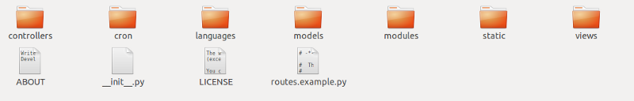

Gabriela Amaral, Lucas Lentini, Pedro Victor e Rogerio Dias
O que é?
Framework open source para desenvolvimento ágil, escalável, seguro e portável, para aplicações orientadas a banco de dados. Escrito e programado em Python.
Por que usar?
Portável e multiplataforma
Roda em Windows, Mac, Unix/Linux, Google App Engine, Amazon EC2, e outros serviços de web hosting como Python Anywhere.
Bootstrap
Pouca ou nenhuma preocupação com CSS e esquemas de estilo. Esquemas de folhas de estilo pré-definidas e padronizadas.

MVC
Model-View-Controller, separação entre dados e apresentação das aplicações, de forma a garantir a independência das alterações das partes, isto é, uma alteração em um layput não interefere na manipulação dos dados.
Separação de dados de uma aplicação web2py
